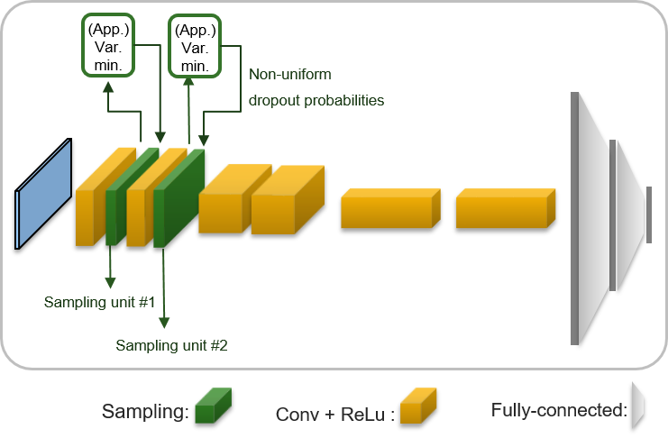
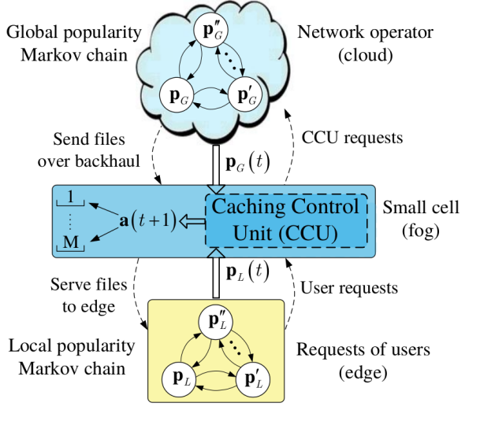
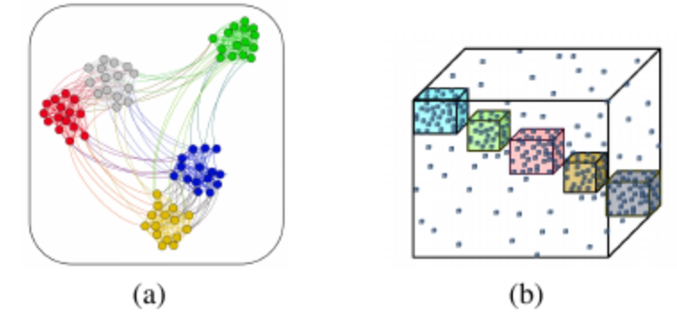
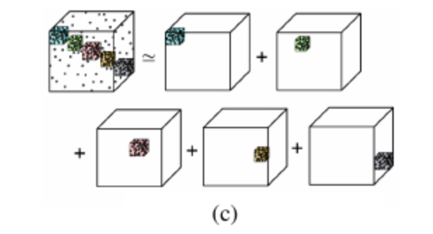
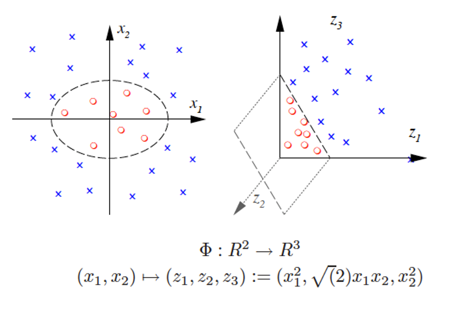

Adversarial input detection in deep neural networks
Despite their unprecedented performance in various domains, utilization of Deep Neural Networks (DNNs) in safety-critical environments is severely limited in the presence of even small adversarial perturbations. To address this issue, we have developed a randomized approach to detecting such perturbations based on minimum uncertainty metrics that rely on sampling at the hidden layers during the DNN inference stage. Being modular, the novel detector of adversaries can be conveniently employed by any pre-trained DNN at no extra training overhead. Selecting which units to sample per hidden layer entails quantifying the amount of DNN output uncertainty from the viewpoint of Bayesian neural networks, where the overall uncertainty is expressed in terms of its layer-wise components. Minimum uncertainty based detection is performed via exact as well as approximate low-complexity sampling, where insightful links with state-of-the-art randomized adversarial detectors are made, and improved detection performance is demonestrated through extensive tests on state-of-the-art convolutional neural networks for various types of adversarial attacks.

Publications
1. F. Sheikholeslami, S. Jain, and G. B. Giannakis, Randomized defenses against adversarial images in convolutional neural networks, IEEE Intl. Conf. on Acoustics, Speech, and Signal Processing (ICASSP), Brighton, UK, May 2019.
2. F. Sheikholeslami, S. Jain, and G. B. Giannakis, Minimum uncertainty based detection of adversaries in deep neural networks, submitted to IEEE Trans. on Pattern Analysis and Machine Intelligence. (arxiv)
Reinforcement learning for content caching
Small basestations (SBs) equipped with caching units have the potential to handle unprecedented demand growth in heterogeneous networks by prefetching popular files during off-peak traffic hours, storing in local cache, and servicing them to the edge user at peak periods. To intelligently prefetch, each SB must learn what and when to cache, while taking into account SB memory limitations, the massive number of available contents, the unknown popularity profiles, as well as the space-time popularity dynamics of user file requests. In our approach, we have modeled local and global user requests as Markov processes, and a reinforcement learning (RL) framework is put forth for finding the optimal caching policy when the transition probabilities involved are unknown. The novel RL-based caching relies on a Q-learning algorithm to implement the optimal policy in an online fashion, thus enabling the cache control unit at the SB to learn, track, and possibly adapt to the underlying dynamics.
To endow the algorithm with scalability, a linear function approximation of the proposed Q-learning is introduced, offering faster convergence, reduced complexity and memory requirements.

Publications
A. Sadeghi, F. Sheikholeslami, A. Marquez, and G. B. Giannakis, Reinforcement learning for adaptive caching with dynamic storage pricing, submitted to IEEE Journal on Selected Areas in Communications. (arxiv)
A. Sadeghi, F. Sheikholeslami, G. B. Giannakis, Optimal and scalable caching for 5G using reinforcement learning of space-time popularities, IEEE Journal on Special Topics in Signal Processing, vol. 12, no. 1, pp. 180-190, February 2018. (arxiv)
A. Sadeghi, F. Sheikholeslami, A. Marques, and G. B. Giannakis, Reinforcement learning for 5G caching with dynamic costs, Proc. of IEEE Intl. Conf. on Acoustics, Speech, and Signal Processing (ICASSP), Calgary, CA, April 2018.
A. Sadeghi, F. Sheikholeslami, and G. B. Giannakis, Dynamic Proactive Caching via Reinforcement Learning, IEEE Proc. of SPAWC, Greece, July, 2018.
Robust tensor-based community detection on large-scale graphs


Publications
F. Sheikholeslami, and G. B. Giannakis, Overlapping community detection via constrained PARAFAC: A divide and conquer approach, IEEE Intl. Conf. on Data Mining (ICDM), New Orleans, USA, 2017 (Regular paper- Acceptance rate: 9.25\%). (IEEE) (WSDM Workshop )
F. Sheikholeslami, and G. B. Giannakis, Identification of overlapping communities via constrained egonet tensor decomposition, IEEE Transactions on Signal Processing, vol. 66, no. 21, pp. 5730-5745, November 2018. (arxiv)
F. Sheikholeslami, and G. B. Giannakis, Soft Unveiling of Communities via Egonet Tensors, Proc. of Asilomar Conf., Pacific Grove, CA, Oct. 29 - Nov. 1, 2017.
F. Sheikholeslami, B. Baingana, and G. B. Giannakis and N. D. Sidiropoulos, Egonet tensor decomposition for community identification, Proc. of Globalsip, Washington, DC, Dec. 7-9, 2016.
Scalable kernel-based feature extraction on a budget

Publications
F. Sheikholeslami, D. K. Berberidis, and G. B. Giannakis, Large-scale kernel-based feature extraction via budgeted nonlinear subspace tracking, IEEE Transactions on Signal Processing, vol. 66, no. 8, pp. 1967-1981, April 2018. (arxiv)
F. Sheikholeslami, and G. B. Giannakis, Scalable Kernel-based Learning via Low-rank Approximation of Lifted Data, Proc. of Allerton Conf. on Comm., Control, and Computing, Urbana, IL, Oct. 4-6, 2017.
F. Sheikholeslami, D. K. Berberidis, and G. B. Giannakis, Memory efficient low-rank non-linear subspace tracking, Proc. of CAMSAP Conf., Curacao, Dutch Antilles, Dec. 10-13, 2017.
F. Sheikholeslami, D. K. Berberidis, and G. B. Giannakis, Kernel-based Low-rank Feature Extraction on a Budget for Big Data Streams, Proc. of Globalsip Conf., Orlando, FL, Dec., 2015.
F. Sheikholeslami, and G. B. Giannakis, Online Subspace Learning and Nonlinear Classification of Big Data with Misses, Proc. of Conf. on Info. Sciences and Systems, Johns Hopkins Univ., Baltimore, MD, March 18-20, 2015.
F. Sheikholeslami, M. Mardani, and G. B. Giannakis, Classification of Streaming Big Data with Misses, Proc. of Asilomar Conf. on Signals, Systems, and Computers, CA, Nov. 2014.
Spectrum Handoff in Cognitive radio networks
Publications
F. Sheikholeslami, M. Nasiri-Kenari and F. Ashtiani, Optimal Probabilistic Initial and Target Channel Selection for Spectrum Handoff in Cognitive Radio Networks, IEEE Transaction on Wireless Communications, vol. 14, no. 1, 2015. (arxiv)
H. Shokri Ghadikolaei, F. Sheikholeslami, M. Nasiri-Kenari, Distributed multiuser sequential channel sensing schemes in multichannel cognitive radio networks, IEEE Transactions on Wireless Communications, vol. 12, no. 5, 2013. (arxiv)